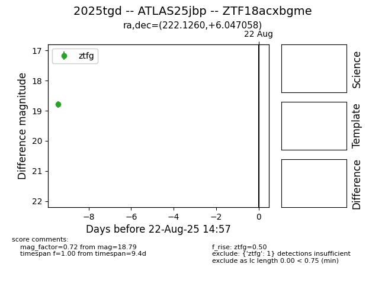

Target 2025tgd at 2025-08-21 09:16, see:
FINK: fink-portal.org/ZTF18acxbgme
Lasair: lasair-ztf.lsst.ac.uk/objects/ZTF18acxbgme
ALeRCE: alerce.online/object/ZTF18acxbgme
TNS: wis-tns.org/object/2025tgd
YSE: ziggy.ucolick.org/yse/transient_detail/2025tgd
alt names
ZTF18acxbgme (ztf,alerce)
2025tgd (tns,yse)
ATLAS25jbp (atlas)
coordinates:
equatorial (ra, dec) = (222.1260,+6.04706)
galactic (l, b) = (1.0993,+55.09497)
photometry
last ztfg=18.79
1 ztfg detections
